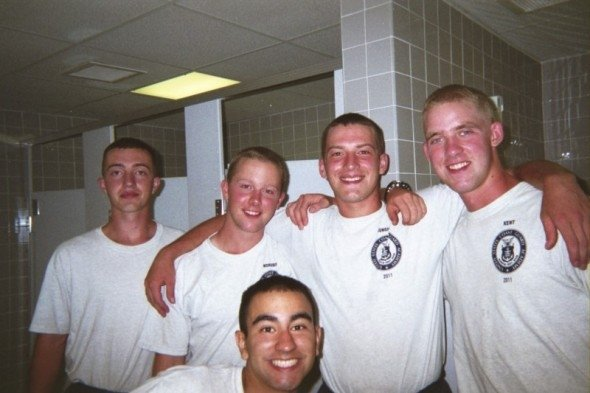
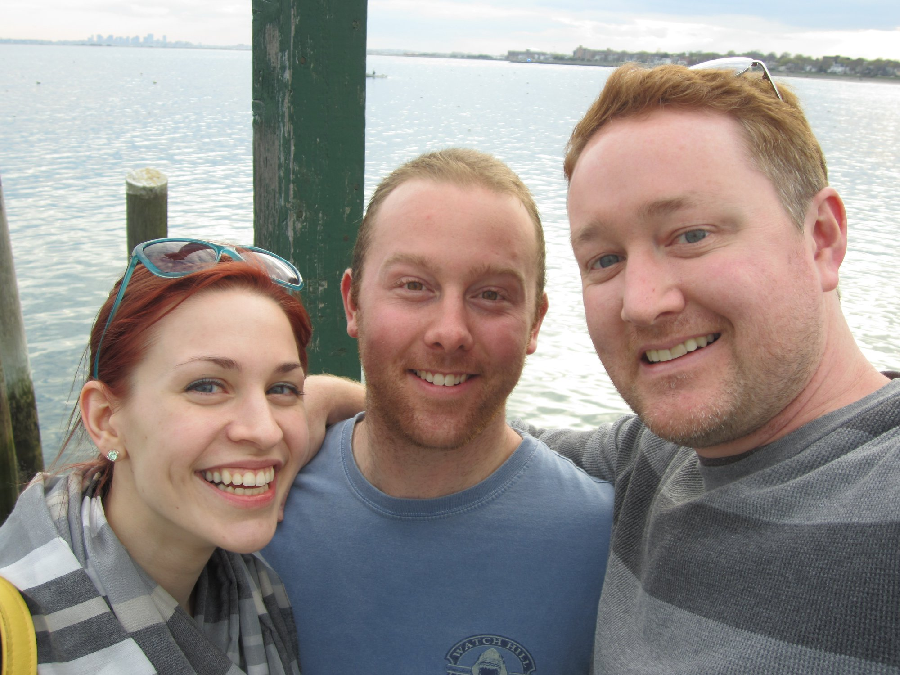
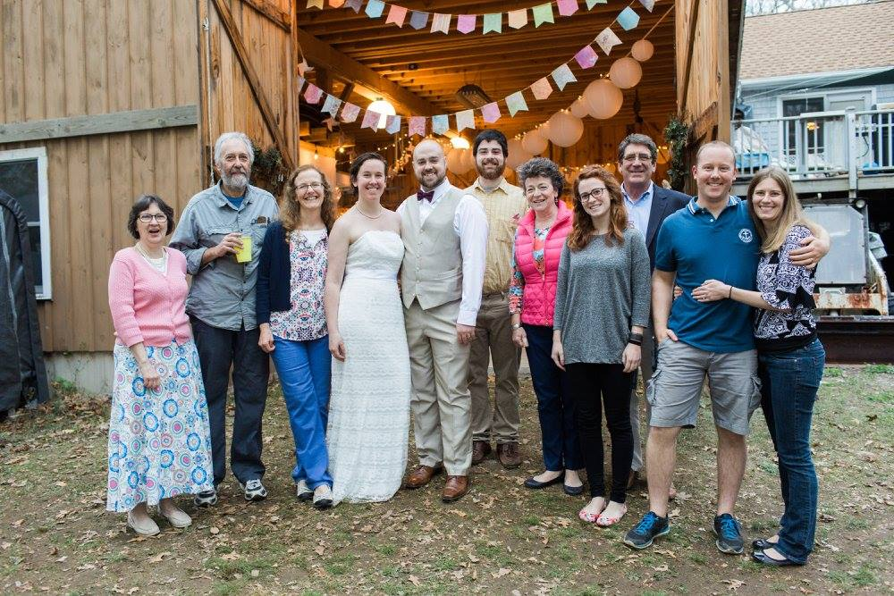
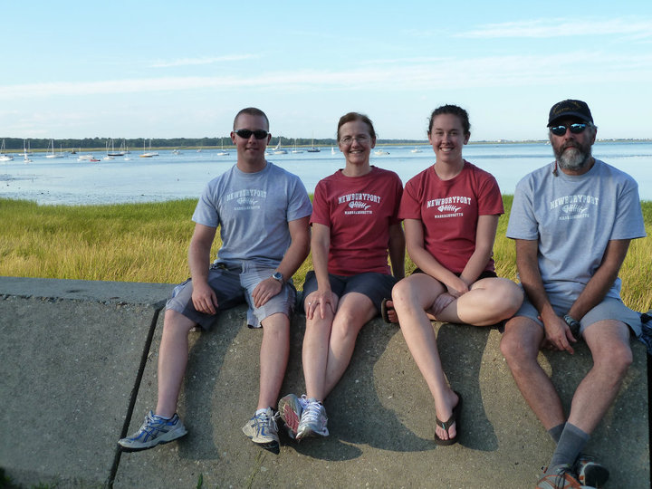
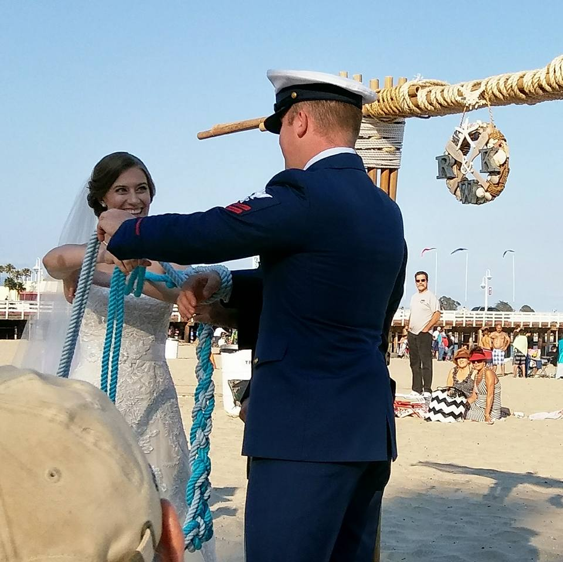
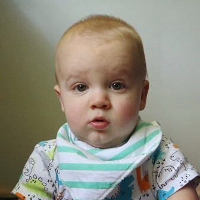

Improving the world one emergency at a time while serving at USCG Station Golden Gate made me understand that I should develop my talents so that I can multiply the number of lives I save. Operating a 40,000 lb surf boat to tow distressed mariners away from the rocks gave me a sense of pride. However, in the hours that it took to reach the poor souls, I kept thinking that it shouldn't take this long for help to arrive. Since I was no admiral that could move large sums of money around to effect change, I decided to go back to school. I figured that by earning engineering credentials I could apply both my experience and knowledge to the industry which designs life saving systems.
Family and Home






Family for me has been an adaptive state since I graduated high school. Jumping straight into boot camp at the USCGA and having 30 people that will be at your side through blood sweat and tears can change your perspective of family. Eight weeks of suffering and with little bits of peace sprinkled on top made me understand that family was not as simple as who your parents and siblings are. When I was sent to my first unit, I had to look for family wherever I could find it. Friends come and go, but every now and then you get the chance to add a member to you family. I found my best friend at age 24 by offering my help to move hime and his fiance into the apartment above mine. A little bit of forceful kindness on both of our parts displayed to each other what kind of people we were. Ever since then, there has only been shared support for each others lives. He now lives in New Zealand, but distance doesn't mean very much to me. Just because you can't physically be present does not mean that you have the inability to help your friends through tough situations. I transferred to Surf Station Golden Gate for the purpose of chasing large waves and pulling a much larger amount of people out of the water. The one thing that I didn't expect was to meet my soulmate. My family didn't really expand or retract much until I met the love of my life in San Francisco. It seems as though love finds you when you're not looking for it. After finding out that I couldn't live without my her, I decided to propose. I asked her to spend the rest of her life with me underneathe the Golden Gate bridge on the bow of my rescue boat. Adding her to my family was the smartest decision I had ever made. My wife's support meant and still means the world to me. It was her support that influenced my to end my active duty career in the Coast Guard and pursue my education. Right at the end of my tour at USCG Station Golden Gate, my son was born and we were soon on our way across the country to Pittsburgh. The question of where I'm now going depends strongly on what's best for my family. They come first because we support each other no matter what changes us.
Entertainment
I LOVE DESIGNING.
In my free time I design 3-wheeled electric transports called "Tribeys". They can go through sand and snow from coast to coast like butter on toast.
My community spans between actual and virtual, depending on the space I'm in at the time. My actual community exists while I'm at work as a reservist. This community includes people from all parts of our workforce. We are a group of colleagues that care about our families and work to keep that community intact and safe one weekend a month. When we depart company, there are many lessons learned that we take back to our individual communties. My virtual community is a forum for heavy equipment owners. I joined this community after purchasing a 1969 Case 580ck backhoe. The amount of knowledge and experience in this community flows to everyone who joins. I find myself feeling grounded when I'm actively using the forum to work through an issue with my Case. Working toward a common goal makes me feel as though I'm apart of a great community, whether it's large or small, virtual or real.
School
This education that I started over a decade ago is no longer a means to "get a job" or even make money. That may have been how my scholastic journey started. It will however, end with an engineering degree that I can use to make lives better. Two and a half years at the Coast Guard Academy was a great starting experience. I learned humility, dicipline, and the ability to harness my will power. I did not learn how to succeed academically though. My expectations of cruising through the Academy and landing a wonderful life afterwards were too optimistic. I ended up splitting me knee in half along with my grades shortly afterwards, then dropping out while I healed. Eight years of active duty in the enlisted ranks after that I ended up at the University of Pittsburgh with the intention of finishing my educational battle. While I've been here I managed to secure a stellar student/work job at HERL(Human Engineering Research Laboratory) where I've gained real world experience in designing working prototypes that benefit disabled veterans. I'm still here and plan to finish the fight by networking this final year to find the near perfect fit at a company that I can serve the best with my skillset.